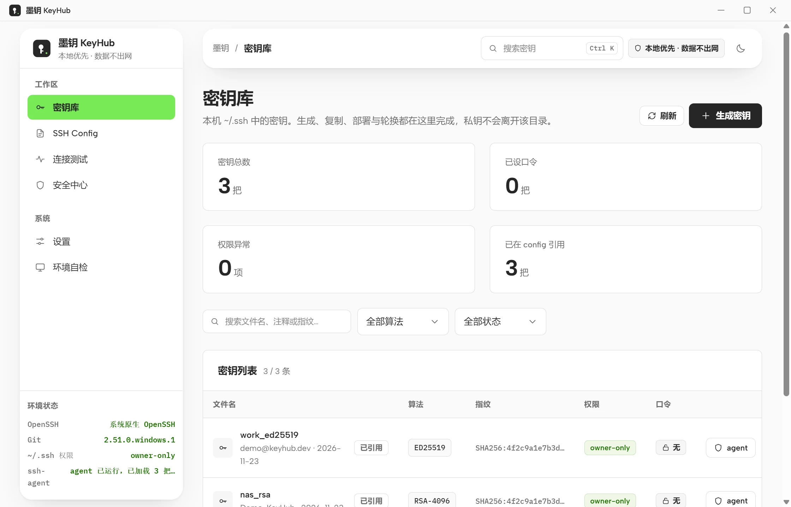
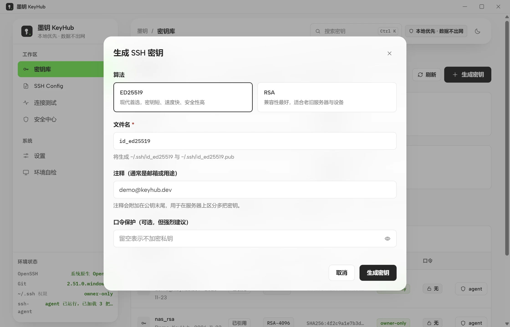
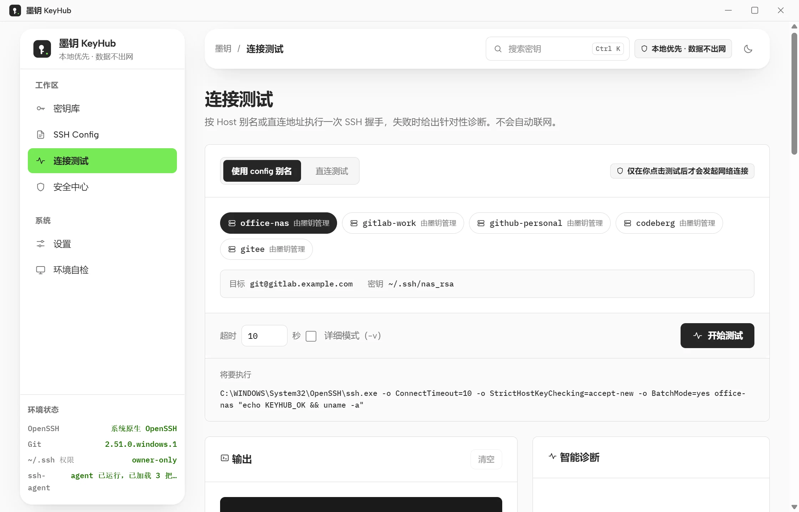
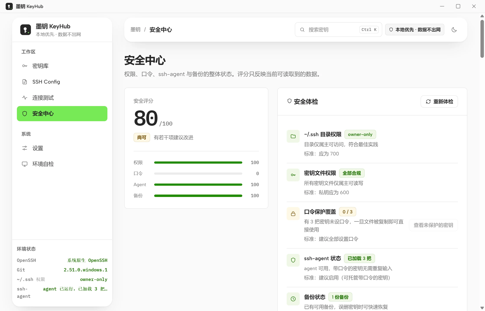

环境自检
启动先确认 ssh、ssh-keygen、ssh-add 与 Git 是否就绪，检查 ~/.ssh 目录与敏感文件权限。Windows 支持一键启用系统 OpenSSH 组件。
只读检测 · 分平台引导Windows 10 / 11 · 本地优先 · 零命令行
墨钥 KeyHub 把生成、部署、配置、修复、诊断收进一套可视化流程。
私钥始终只留在 ~/.ssh，程序不保存副本，也不上传任何数据。

01 / 为什么
SSH 密钥本身不复杂，复杂的是记忆、上下文切换和那些不解释原因的报错。 墨钥把这些步骤变成表单、校验和可回滚的动作，命令仍然由系统原生 OpenSSH 执行。
$ ssh-keygen -t ed25519 -C "you@example.com"
$ cat ~/.ssh/id_ed25519.pub
# 复制公钥，去浏览器粘到 GitHub / GitLab / Gitee
$ vim ~/.ssh/config
# 缩进、端口、IdentityFile，一个字符都不能错
$ chmod 700 ~/.ssh && chmod 600 ~/.ssh/id_*
$ ssh -T git@github.com
Permissions are too open.
# 搜 20 分钟，再试一次确认 ssh、Git 与 ~/.ssh 权限，缺什么就补什么。
选算法、写注释、设置口令，一次填完。
复制公钥，按内置指引粘贴到代码平台。
表单编辑 Host，保存前校验，写入前备份。
02 / 功能
六个模块覆盖密钥的完整生命周期。所有能力都调用系统原生 OpenSSH， 不使用第三方 SSH 实现。
启动先确认 ssh、ssh-keygen、ssh-add 与 Git 是否就绪，检查 ~/.ssh 目录与敏感文件权限。Windows 支持一键启用系统 OpenSSH 组件。
只读检测 · 分平台引导扫描算法、位数、SHA256 指纹、注释、创建时间与口令状态。支持 ED25519 与 RSA 2048 / 3072 / 4096，公钥一键复制。
生成 · 导入 · 轮换Form / Raw 双模式。只重写墨钥托管的注释块，块外的注释、缩进、ProxyJump 与 Match 原样保留；保存前指出具体的 Host 与改法。
保存前校验 · 自动备份体检目录、私钥、config、known_hosts 与 authorized_keys。不合规项优先展示，可单项或一键全部修复。
Windows icacls · Unix chmod执行一次真实 SSH 握手，实时输出、耗时与退出码。覆盖超时、DNS 失败、公钥被拒、agent 未运行、指纹变更等十类故障。
先预览命令 · 失败给下一步0–100 安全评分，按权限、口令、agent、备份四个维度给出改进项。管理 ssh-agent、加密备份与审计日志。
评分 · 备份 · 审计03 / 界面
下面三张图来自正在运行的墨钥 KeyHub，演示数据只用于展示。
生成密钥
选择 ED25519 或 RSA，填写注释与可选口令。私钥直接写入 ~/.ssh，程序不另存副本；
带口令的密钥也不会被自动塞进 ssh-agent 的命令行。

连通诊断
按 Host 别名或直连地址执行一次真实握手。执行前先展示完整 ssh 命令，不联网预览； 失败时逐条说明原因和下一步，而不是把一整段 verbose 输出丢给你。

安全中心
0–100 安全评分，按四个维度列出可执行的改进项。读不到数据时明确显示「无法评估」， 不会把未知折叠成 0 分或「合规」。

04 / 安全
墨钥不托管你的私钥，只操作 ~/.ssh 里已有的文件。
敏感操作要确认，写入之前有备份，失败就如实显示失败。
不缓存私钥内容，不写临时文件。程序不在自己的目录里另存一份密钥库。
带口令的私钥拒绝自动加入 ssh-add，避免口令作为参数被其它进程读到。
前端只传文件名，绝对路径全部在 Rust 侧计算；拒绝以 . 开头的文件名与 ..。
配置先写 .tmp 再 rename，避免留下半截文件或写坏原有配置。
读不到数据就显示「未知 / 无法评估」，绝不渲染成 0、false 或「合规」。
AES-256-GCM 加密、Argon2id 派生密钥，备份文件为 .khbak。
05 / 上手
确认 OpenSSH 与 Git 可用，检查 ~/.ssh 权限。
选算法，写注释，按需设置口令。
按内置指引，把公钥粘贴到代码平台。
表单编辑 Host，保存前校验，写入前备份。
执行真实连接，失败就看诊断建议。
07 / 问答
不会。私钥只存在于 ~/.ssh，程序不保存副本、不写临时文件。默认零网络请求，也不含遥测。
唯一的可选联网是更新检查——默认关闭，开启后也只读取 GitHub 的版本文件；另一个是你在连接测试中主动触发的 SSH 握手。
不会。墨钥只重写 # ─── KeyHub managed block begin/end ─── 之间的内容，块外的注释、缩进、ProxyJump 与 Match 原样保留。
每次写入前都会生成备份，保存后可一键回滚。想退出管理，手动删掉这对注释之间的内容即可。
基于 Tauri 2：Rust 后端 + 系统 WebView，不像 Electron 那样打包一整份 Chromium。安装后也不需要常驻后台服务。
按当前用户安装（currentUser）。Windows 权限修复使用 icacls，只调整当前用户对 ~/.ssh 的 ACL，不需要改动其它账户。
代码与打包配置已覆盖三端，权限、agent 与子进程都有分平台实现。但当前只在 Windows + GNU 工具链下完成完整构建与安装验证，macOS / Linux 尚未实机回归。
所以官网目前只提供 Windows x64 安装包。
客户端通过 Tauri updater 读取 latest.json，安装包必须通过 minisign 签名校验才会安装。自动检查默认关闭，可在设置 → 应用更新中开启。
在。程序只读写 ~/.ssh 与自己的应用数据目录；卸载不会删除 ~/.ssh 中的密钥与配置。